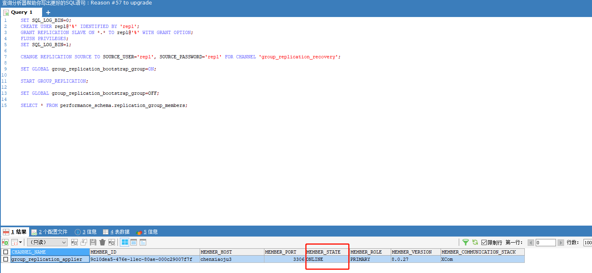
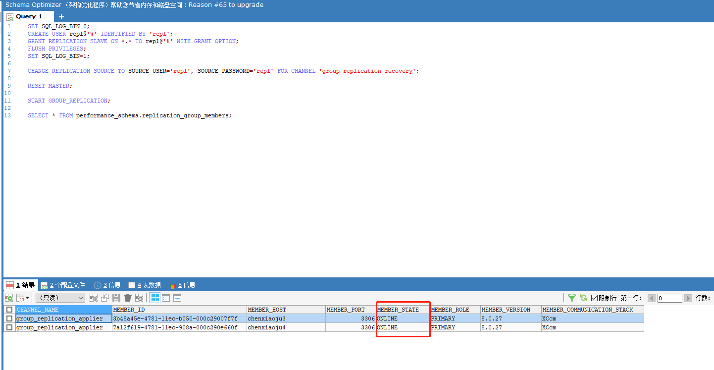
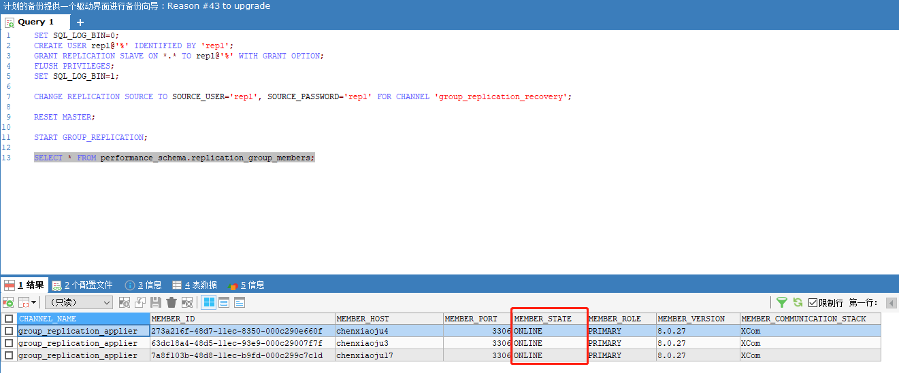
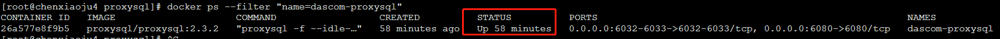
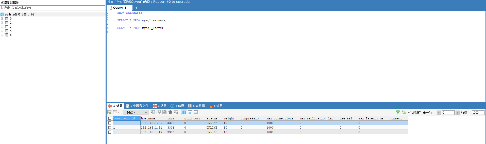

注：只提供部署三台MySQL服务器的流程，基于MySQL的MGR特性。没有主从关系，每个节点都是一样的。 部署多台的服务方式一样，只需简单的修改几个地方的配置。
案例环境说明
| 节点 | ip | 端口 | 作用 |
|---|---|---|---|
| 节点1 (chenxiaoju3) | 192.168.1.89 | 3306 | MySQL部署 |
| 节点2 (chenxiaoju4） | 192.168.1.91 | 3306，6033 | MySQL部署+ProxySQL |
| 节点3(chenxiaoju17) | 192.168.1.17 | 3306 | MySQL部署 |
安装各节点的MySQL服务
一、建设目录和磁盘挂载
在宿主机上建立如下目录
/dascom/mysql/config
/dascom/mysql/db
命令：
mkdir -p /dascom/mysql/config /dascom/mysql/db
目录说明：
|-/dascom v10所有服务目录
|-mysql 表示mysql数据库服务，对应的服务的启动脚本等都会放到这里
|-config mysql数据库的配置路径
|-db 数据库数据存放路径
::: 🤔 重要提示
db目录是数据存放的目录，一开始磁盘挂载要分配好合理的空间。否则后期空间满了不好处理。
:::
二、上传配置文件和启动脚本
注：三台MySQL节点服务器都一样的步骤。
2.1 上传配置文件
创建配置文件放到/dascom/mysql/config目录下，名称如下
config.cnf
内容配置解释：
[mysqld]
#忽略大小写
lower_case_table_names=1
# 最大连接数
max_connections=1024
# 服务端使用的字符集
character-set-server=utf8mb4
# 密码插件
authentication_policy=mysql_native_password
#GTID:
#当前节点的id。每个节点都不能一样
server_id=1
gtid_mode=on
enforce_gtid_consistency=on
#binlog
binlog_checksum=NONE
log_bin=mysql-bin
log_replica_updates=1
binlog_format=row
sync_source_info=1
sync_binlog=1
#relay log
skip_replica_start=1
#添加插件
plugin_load_add='group_replication.so'
#MGR主要配置
#组的名字可以随便起,但不能用主机的GTID! 所有节点的这个组名必须保持一致！
loose-group_replication_group_name="d6eee5a1-4124-11ec-bbec-0242ac110003"
#为了避免每次启动自动引导具有相同名称的第二个组,所以设置为OFF。
loose-group_replication_start_on_boot=off
#当前机器的地址,后面的端口根据官网以上24901,24901...随便即可。
loose-group_replication_local_address="192.168.1.89:24901"
#组的全部地址
loose-group_replication_group_seeds="192.168.1.89:24901,192.168.1.91:24901"
loose-group_replication_bootstrap_group=off
loose-group_replication_single_primary_mode=off
#开启多主模式的参数
loose-group_replication_enforce_update_everywhere_checks=on
#读写一致性的策略配置，数据延迟的关键配置
group_replication_consistency=BEFORE
2.2 上传启动脚本
创建启动脚本到服务器/dascom/mysql路径下。文件名字：
dascom-mysql-deploy
修改文件可执行
chmod +x dascom-mysql-deploy
启动脚本命令解释：
#!/bin/bash
#author :chenxj
docker run \
--name dascom-mysql \ #容器名字
--privileged=true \ #提升容器权限
--restart=always \ #随docker启动
--net=host \ #docker的网络桥接模式，=host表示和宿主机在同一个网络中，使用宿主机的IP和端口
-v /dascom/mysql/db:/var/lib/mysql \ #挂载数据存储目录
-v /dascom/mysql/config:/etc/mysql/conf.d \ #配置文件的映射
-v /etc/localtime:/etc/localtime \ #容器时区问题
-e MYSQL_ROOT_PASSWORD=dascom \ #数据库root用户的密码配置
-d mysql:8.0.27 --lower_case_table_names=1
2.3 修改各节点的hosts文件（重要）
修改各节点的hosts文件，配置组内节点的主机名和IP
vim /etc/hosts
获取主机名的命令
hostname
添加以下内容
...
192.168.1.89 chenxiaoju3
192.168.1.91 chenxiaoju4
192.178.1.17 chenxiaoju
重启网络
service network restart
三、 修改配置，启动并执行组同步操作
3.1 节点1 192.168.1.89（引导节点）
1）修改配置文件
修改配置文件的中以下几项为以下值
#当前节点的id。每个节点都不能一样
server_id=1
#当前机器的地址,后面的端口根据官网以上24901,24901...随便即可。
loose-group_replication_local_address="192.168.1.89:24901"
#组的全部地址
loose-group_replication_group_seeds
="192.168.1.89:24901,192.168.1.91:24902,192.168.1.17:24903"
2）启动服务
./dascom-mysql-deploy
3) 使用MySQL客户端工具连接，配置MGR
如果有防火墙，记得开发3306 和 24901端口
192.168.1.89:3306
工具连接上以后，直接运行以下命令，一个一个(“;”号结尾)的运行。(#开头的省略)
#创建复制账户
SET SQL_LOG_BIN=0;
CREATE USER repl@'%' IDENTIFIED BY 'repl';
GRANT REPLICATION SLAVE ON *.* TO repl@'%' WITH GRANT OPTION;
FLUSH PRIVILEGES;
SET SQL_LOG_BIN=1;
#配置复制信息命令
CHANGE REPLICATION SOURCE TO SOURCE_USER='repl', SOURCE_PASSWORD='repl' FOR CHANNEL 'group_replication_recovery';
#引导节点需要设置ON，否则一直识别不到其他节点（因为其他节点还没有启动）
SET GLOBAL group_replication_bootstrap_group=ON;
#开启组复制
START GROUP_REPLICATION;
#恢复参数
SET GLOBAL group_replication_bootstrap_group=OFF;
#查看组状态
SELECT * FROM performance_schema.replication_group_members;
最终出现以下界面，状态是ONLINE表示成功！

3.2 节点2 192.168.1.91（其他节点）
1）修改配置文件
修改配置文件的中以下几项为以下值
#当前节点的id。每个节点都不能一样
server_id=2
#当前机器的地址,后面的端口根据官网以上24901,24901...随便即可。
loose-group_replication_local_address="192.168.1.91:24902"
#组的全部地址
loose-group_replication_group_seeds
="192.168.1.89:24901,192.168.1.91:24902,192.168.1.17:24903"
2）启动服务
./dascom-mysql-deploy
3) 使用MySQL客户端工具连接，配置MGR
如果有防火墙，记得开发3306和24902端口
192.168.1.91:3306
工具连接上以后，直接运行以下命令，一个一个(“;”号结尾)的运行。(#开头的省略)
#创建复制账户
SET SQL_LOG_BIN=0;
CREATE USER repl@'%' IDENTIFIED BY 'repl';
GRANT REPLICATION SLAVE ON *.* TO repl@'%' WITH GRANT OPTION;
FLUSH PRIVILEGES;
SET SQL_LOG_BIN=1;
#配置复制信息命令
CHANGE REPLICATION SOURCE TO SOURCE_USER='repl', SOURCE_PASSWORD='repl' FOR CHANNEL 'group_replication_recovery';
#重置同步日志文件
RESET MASTER;
#开启组复制
START GROUP_REPLICATION;
#查看组状态
SELECT * FROM performance_schema.replication_group_members;
最终出现以下界面，状态是ONLINE表示成功！

3.3 节点2 192.168.1.17（其他节点）
1）修改配置文件
修改配置文件的中以下几项为以下值
#当前节点的id。每个节点都不能一样
server_id=2
#当前机器的地址,后面的端口根据官网以上24901,24901...随便即可。
loose-group_replication_local_address="192.168.1.19:24903"
#组的全部地址
loose-group_replication_group_seeds
="192.168.1.89:24901,192.168.1.91:24902,192.168.1.17:24903"
2）启动服务
./dascom-mysql-deploy
3) 使用MySQL客户端工具连接，配置MGR
如果有防火墙，记得开发3306和24902端口
192.168.1.17:3306
工具连接上以后，直接运行以下命令，一个一个(“;”号结尾)的运行。(#开头的省略)
#创建复制账户
SET SQL_LOG_BIN=0;
CREATE USER repl@'%' IDENTIFIED BY 'repl';
GRANT REPLICATION SLAVE ON *.* TO repl@'%' WITH GRANT OPTION;
FLUSH PRIVILEGES;
SET SQL_LOG_BIN=1;
#配置复制信息命令
CHANGE REPLICATION SOURCE TO SOURCE_USER='repl', SOURCE_PASSWORD='repl' FOR CHANNEL 'group_replication_recovery';
#重置同步日志文件
RESET MASTER;
#开启组复制
START GROUP_REPLICATION;
#查看组状态
SELECT * FROM performance_schema.replication_group_members;
最终出现以下界面，状态是ONLINE表示成功！

现在，随便在其中一台上添加数据，另外两台都会同步数据！！！
安装ProxySQL服务
::: 🤔 版本
ProxySQL: 2.3.2
:::
一、建设目录和磁盘挂载
在宿主机上建立如下目录
/dascom/proxysql/config
/dascom/proxysql/db
命令：
mkdir -p /dascom/proxysql/config /dascom/proxysql/db
目录说明：
|-/dascom v10所有服务目录
|-proxysql 表示ProxySQL数据库服务，对应的服务的启动脚本等都会放到这里
|-config ProxySQL数据库的配置路径
|-db 数据库数据存放路径
::: 🤔 重要提示
db目录是数据存放的目录，一开始磁盘挂载要分配好合理的空间。否则后期空间满了不好处理。
:::
二、上传配置文件并修改
创建配置文件到/dascom/proxysql/config目录下，文件名称
proxysql.cnf
内容配置解释：
#数据存放目录，默认不用修改，会挂载到主机的/dascom/proxysql/db目录
datadir="/var/lib/proxysql"
#全局主配置信息
admin_variables=
{
admin_credentials="admin:admin;radmin:radmin" #控制台用户和密码 admin只能本机访问，radmin可以远程访问
mysql_ifaces="0.0.0.0:6032" #控制台端口
web_enabled="true" #启用web监控界面
}
mysql_variables=
{
threads=4
max_connections=3000
default_query_delay=0
default_query_timeout=36000000
have_compress=true
poll_timeout=2000
interfaces="0.0.0.0:6033" #项目连接的端口 6033 和 mysql 3306。 发现规律了吗？
default_schema="information_schema"
stacksize=1048576
server_version="8.0.27"
connect_timeout_server=3000
monitor_username="root"
monitor_password="dascom"
monitor_history=600000
monitor_connect_interval=60000
monitor_ping_interval=10000
monitor_read_only_interval=1500
monitor_read_only_timeout=500
ping_interval_server_msec=120000
ping_timeout_server=500
commands_stats=true
sessions_sort=true
connect_retries_on_failure=10
}
#mysql 服务的配置，几台服务配置几条数据
#hostgroup必须一致 weight权重 max_connections最大连接数，需要小于mysql配置的最大连接数，否则使用过程中会报错，默认值1000
mysql_servers =
(
{ address="192.168.1.89" , port=3306 , hostgroup=1, weight=10, max_connections=1000 },
{ address="192.168.1.91" , port=3306 , hostgroup=1, weight=10, max_connections=1000 },
{ address="192.168.1.17" , port=3306 , hostgroup=1, weight=10, max_connections=1000 }
)
# mysql服务连接的用户配置
# 用户的配置一定是后端的MySQL的连接用户
#default_hostgroup 管理的组就是上面servers的hostgroup，否则使用该用户连不上servers的服务。
#max_connections 最大连接数，一般就是上面servers的最大连接数总和
mysql_users:
(
{
username = "root"
password = "dascom"
default_hostgroup = 1
active = 1
max_connections=3000
}
)
🤔 需要修改的配置
1.mysql_servers块， 配置后端MySQL的所有服务，最大连接数等信息
2.mysql_users块
三、上传启动脚本，并启动
创建启动脚本到/dascom/proxysql目录下，名称如下：
dascom-proxysql-deploy
修改可执行：
chmod +x dascom-proxysql-deploy
脚本解释：
#!/bin/bash
#author: chenxj
docker run \
--name dascom-proxysql \ #容器名
--privileged=true \
--restart=always \ #随docker启动
-p 6032:6032 \ #映射控制台端口
-p 6033:6033 \ #映射平台连接端口
-p 6080:6080 \ #映射web监控页面端口
-v /dascom/proxysql/config/proxysql.cnf:/etc/proxysql.cnf \ #配置文件挂载
-v /dascom/proxysql/db:/var/lib/proxysql \ #数据存放目录挂载
-d proxysql/proxysql:2.3.2 \
启动服务：
./dascom-proxysql-deploy
查看是否启动成功
执行命令：
docker ps --filter "name=dascom-proxysql"

出现STATUS 是UP状态表示启动成功
::: 🤔 端口说明
ip: 6032 控制台的端口，比如使用SQLyog连接就是连这个端口，或者使用MariaDB本机通过admin用户连接的端口
ip:6033 项目连接的端口， 和MySQL默认的3306刚好相反
ip:6080 ProxySQL 的web监控端口，浏览器输入 https://ip:6080
stats/stats可以看到一些监控信息，如连接数...。 注意是https！！！
:::
四、测试连接
如果有防火墙，需要开放上面的三个端口
#开放端口
firewall-cmd --zone=public --add-port=6033/tcp --permanent
firewall-cmd --zone=public --add-port=6032/tcp --permanent
firewall-cmd --zone=public --add-port=6080/tcp --permanent
#重启防火墙
systemctl restart firewalld
使用客户端连接工具 SQLyog (其他也行)连接6032端口。
账号和密码是上面配置的
username: radmin
password: radmin
执行sql查看配置信息
#servers的配置
SELECT * FROM mysql_servers;
#配置的后端用户信息
SELECT * FROM mysql_users;

OK！ 一切完成！！！ 其他的数据的操作和正常的数据库操作一样。